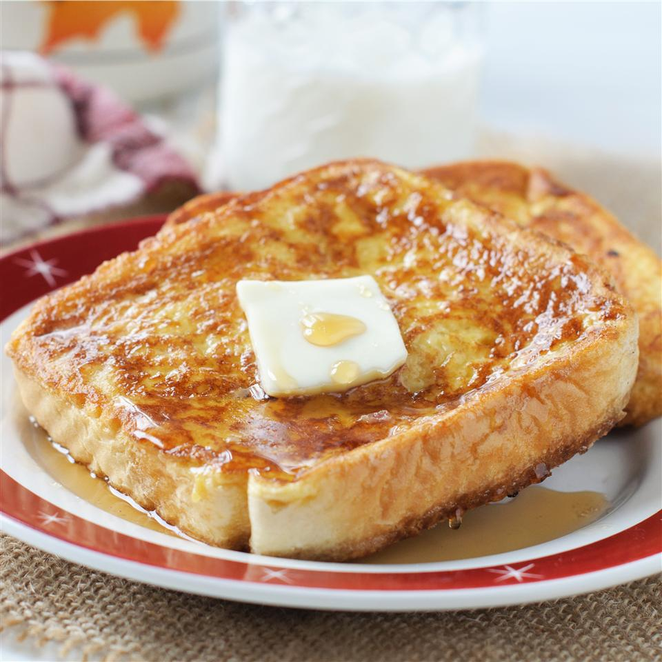

French Toast

Ingredients
- 4 eggs
- 2 tablespoons milk
- 1/4 teaspoon ground cinnamon
- 8 slices bread
Steps
-
Combine eggs, milk and cinnamon; beat well. Dip bread into egg mixture until completely coated.
-
Heat a lightly oiled griddle or frying pan over medium high heat. Cook bread slices until they are golden brown on both sides. Serve hot.